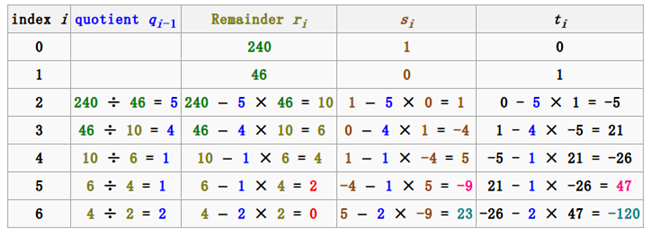

Discrete Math
Table of Contents
1 Logic
1.1 Basic Symbol
- Conditional Statements
\(p \to q\): if p, then q.
When p is true, q is false, the statement is false, otherwise the statement is true.
converse: \(q \to p\)
contrapositive: \(\lnot{q} \to \lnot{p}\)
\(p\leftrightarrow{q}\): p if and only if q
1.2 Propositional Logic
\(p\lor{\lnot{p}}\) is always true, called tautology.
\(p\land{\lnot{p}}\) is always false, called contradiction.
- Logical Equivalences
\(p \equiv q\) : if p↔ q is always true.
- Negation laws
- Identity laws
- De Morgan's Laws
extension: $$\lnot (p_1 \lor p_2 \lor ... \lor p_n) \equiv (\lnot p_1 \land \lnot p_2 \land ... \land \lnot p_n)$$ and vice versa when symbol converses.
- Associative laws
- Distributive laws
- Absorption laws
1.2.1 Equivalences Involving Conditional Statements
1.2.2 Equivalences Involving Biconditional Statements
1.2.3 Extension
- DNF
Disjuctive normal form is a disjuction of conjunctive clauses.
The only propositional operators in DNF are and, or, and not.
The not operator can only be used as part of a literal, which means
that it can only precede a propositional variable.
- Functional completeness
A collection of logical operators is called functionally complete.
if every compound proposition is logically equivalent to
a compound proposition involving only these logical operators.
example: Every compound proposition is logically equivalent to
its DNF forms.
$$a \land b \lor c \equiv (\lnot a \land \lnot c)\lor ( \lnot b \land \lnot c)$$ In this case, \(\lor\) , \(\land\) and \(\lnot\) form a functionallly complete.
- NAND and NOR
- NAND
The proposition p NAND q is true when either p
or q, or both, are false, and it is false when both p and q are
true. \(p \uparrow q \equiv \lnot (p \land q)\) (also called sheffer stroke)
- NOR
The proposition p NOR q is true when both p and q are
false, and it is false otherwise. \(p \downarrow q \equiv \lnot (p \lor q)\)
(also called Peirce arrow )
- Care about Only if
p only if q means \(p\to q\)
1.3 Predicate Logic
Notation \(\forall\): universal quantifier.
\(\forall xP(x)\) means "for all x P(x)"
equivalent to \(P(x_1) \land P(x_2) \land ... \land P(x_n)\)
Notation \(exists\): existential quntifier
\(\exists xP(x)\) means "x exists x P(x)"
1.3.1 Equivalences Involving Quantifiers
- De Morgen's Laws for Quantifiers
| Negation | Equivalent Statement | When Neg. is true | When false |
| \(\lnot \exists xP(x)\) | \(\forall x \lnot P(x)\) | For every x, P(x) is false. | There is an x for which P(x) is true. |
| \(\lnot \forall xP(x)\) | \(\exists x \lnot P(x)\) | There is an x for which P(x) is false. | P(x) is true for every x. |
1.3.2 Nested Quantifiers
$ ∀ x ∃ y P(x, y) $ There is a y such that for every x, P(x, y ).
- Limit Definition
$$ \lim_{x \to a} = L$$ $$ \forall \epsilon>0\exists \delta > 0 \forall x(0<|x-a|<\delta \to |f(x)-L|<\epsilon) $$
- Every one has exactly one best friend
Analysis:
$$\forall x\exists y (B(x, y) \land \forall z ((z\neq y)\to \lnot B(x, z)))$$
There is a y who is the best frient of x,
and for every person z, if z is not y, then z is not the best frient of x.
OR used uniqueness quantifier !, $$\forall x \exists !y B(x, y)$$
- There are exactly two systems that monitor every remote server
$$\exists x \exists y (x\neq y \land \forall z (\forall s M(z, s))) \leftrightarrow (z=x\lor z=y)$$
1.4 Rules of Inference
| Tautology | Name |
| \((p\land(p \to q)) \to q\) | Modus ponens |
| \((\lnot q \land (p\to q)) \to \lnot p\) | Modus tollens |
| \(((p\to q)\land (q\to r)) \to (p \to r)\) | Hypothetical syllogism |
| \(((p\lor q) \land \lnot p)\to q\) | Disjuctive syllogism |
| \(p \to (p\lor q)\) | Addition |
| \((p \land q) \to p\) | Simplification |
| \((p) \land (q) \to (p \land q)\) | Conjuction |
| \(((p\lor q)\land(\lnot p \lor r)) \to (q\lor r)\) | Resolution |
| Rule of Inference | Name |
| \(\forall xP(x) \to P(c)\) | Universal instantiation |
| P(c) for any arbitrary c \(\to \forall xP(x)\) | Universal generalization |
| \(\exists xP(x) \to\) P(c) for some c | Existential instantiation |
| P(c) for some c \(\to \exists xP(x)\) | Existential generalization |
- Two Fallacies
Fallacy of affirming the conclusion
\(((p\to q)\land q) \to p\) is not a tautology. (when p is false, q is true)
Fallacy of denying the hypothesis
\(((p\to q)\land \lnot p\) is not a tautology. (when p is false, q is true)
1.5 Proof Methods and Strategy
1.5.1 Basic(prove \(p\to q\) is true)
- Direct Proofs
Assume p is true, use p to prove q is true, then the theorem is true.
- Proof by Contraposition
Assume \(\lnot q\) is true, prove \(\lnot p\) is true, then the theorem is true.
- Vacuous Proof
When we know p is false, we can quickly get \(p \to q\) is true.
- Trivial Proof
When we know q is true, we can quickly get \(p \to q\) is true.
1.5.2 Proofs by Contradiction
- prove p is true
We want to prove p is true,
If we can find a contradiction q(q is always false), such that \(\lnot p \to q\) is true.
then p is true.
Simple Explanation: \((\lnot q) \land (\lnot p \to q) \to p\)
Simple contradiction: \(r\land \lnot r\)
Steps:
1 get \(\lnot p\)
2 find some argument \(\lnot p \to q\) (q is a contradiction)
- prove \(p\to q\) is true
- first get the negation \(\lnot(p\to q)\)
- we know \(\lnot(p\to q) \equiv p\land \lnot q\) , so \(\lnot (p \to q) \to p\land \lnot q\)
- if we can prove \(p\land \lnot q\) is always false, then \(p\to q\) is true.
- Note that: prove \(p\) and \(\lnot q\) can not be both true.(If we can prove \(\lnot q \to \lnot p\) )(Proof by Contraposition)
- prove several proposition are equivalent
One way to prove: $$\equiv (p_1\to p_2)\land(p_2\to p_3)\land ... \land (p_n \to p_1)$$
1.5.3 A Nonconstructive Existence Proof
Show that there exist irrational numbers x and y such that \(x^y\) is rational.
Let \(x=\sqrt 2, y=\sqrt 2\) , then \(x^y = \sqrt2^\sqrt2\) , if \(\sqrt2^\sqrt2\) is rational, argument is true.
Otherwise let \(x=\sqrt2^\sqrt2, y= \sqrt 2\), then \(x^y = 2\) is a rational number.
So, either these two pairs have the desired property.
1.5.4 Uniqueness Proofs
- Prove the existence of x.
- If \(y\neq x\) ,then y does not have the desired property.
Note that, the following is these argument discribed by statement: $$\exists x(P(x)\land \forall y(y\neq x \to \lnot P(y)))$$
1.5.5 Fun Open Problem
Fermat's last theorem, The 3x+1 Conjecture.
1.6 Puzzles
1.6.1 Q1
Each inhabitant of a remote village always tells the truth
or always lies. A villager will give only a“Yes”or a“No”
response to a question a tourist asks. Suppose you are a
tourist visiting this area and come to a fork in the road.
One branch leads to the ruins you want to visit; the other
branch leads deep into the jungle. A villager is standing
at the fork in the road.What one question can you ask the
villager to determine which branch to take?
A: If I were to ask you whether the right branch
leads to the ruins, would you answer yes?
1.6.2 Q2
The nth statement in a list of 100 statements is“Exactly
n of the statements in this list are false.”
a) What conclusions can you draw from these state-
ments?
b) Answer part (a) if the nth statement is “At least n of
the statements in this list are false.”
c) Answer part (b) assuming that the list contains 99
statements.
Answer:
a) All statements are mutually exclusive. It means at most 1 statement is true.
If 0 statement is true, then 100th says "all 100 statements are false" which is a true statement.
This lead to a parabox.
If 1 statement is true, then 99 statements are false. 99th statement fits this situation.
b) if n+1 is true, then n is true. We need to find the boundary.
Assume n is true and n+1 is false. The statements from n+1 to 100 are false.
So we get the inequality, \(100-n \ge n\) and \(100-(n+1) < n\).
Solution: \(49.5 < n \le 50\)
c) Same as Question b). Get solution \(49.5 < n \le 49.5\). Lead to a parabox.
For the confused case, let 49th statement be true and 50th statement be false.
50th statement's complement: Less than n of the statements are false.
But if 50th is false, then the count of false statements is 50.
1.6.3 Q3
Albert Einstein
2 Basic Structures
2.1 Set
2.1.1 Definitions
- A set is an unordered collection of objects.
- Set A = B when \(\forall x (x \in A) \leftrightarrow (x\in B)\) .
- Set A is a subset of B. \(A\subseteq B\) . \(\forall x (x \in A \to x\in B)\)
- \(\forall S (\emptyset \subseteq S) \land (S\subseteq S)\)
- Set A is a proper subset of B. \(A\subset B\) . \(\forall x (x \in A \to x\in B)\land \exists x (x\in B \land x\notin A)\)
- Other Notes
- A empty set(null set) is denoted by \(\emptyset\)
- These's difference between \(\emptyset\) and \(\{\emptyset\}\) . Be careful.
2.1.2 Operations
- Basic
- \(A\cup B = \{x|x\in A\lor x\in B\}\)
- \(A\cap B = \{x|x\in A\land x\in B\}\)
- \(A-B = \{x | x \in A \land x \notin B\}\)
- \(\overline A = \{x\in U | x\notin A\}\)
- Some identities
Identity Name \(A\cup (B \cap C) = (A\cup B) \cap (A\cup C)\) Distributive laws \(\overline A \cap B = \overline A \cup \overline B\) De Morgan's laws \(A\cup (A \cap B) = A\) Absorption laws - \(A_1 \cup A_2 \cup ... \cup A_n = \bigcup_{i=1}^n A_i\)
- \(A_1 \cap A_2 \cup ... \cap A_n = \bigcap_{i=1}^n A_i\)
- Extended
- \(x\in U = T \ x\in \emptyset = F\)
- \(x\notin A = \lnot(x\in A)\)
- if \(A\cap B = \emptyset\) , these two sets are called disjoint
- \(|A\cup B| = |A| + |B| - |A\cap B|\)
- \(A-B=A\cap\overline B\)
- \(A\oplus B = \{x|(x\in A \lor x\in B) \land (x\notin {A\cap B}\})\)
2.2 Functions
- Definition
Let A and B be nonempty sets. A function f from A to B is an assignment of
exactly one element of B to each element of A . We write f(a)=b if b is the
unique element of B assigned by the function f to the element a of A . If f
is a function from A to B , we write f: A→ B
- Inverse Func
if \(f(a) = b\) (f needs to be bijection), then \(f^{-1}(b) = a\) is its inverse func.
- Compositions of Func
\((f \circ g)(a) = f(g(a))\)
2.2.1 Definitions
- \((f_1+f_2)(x) = f_1(x)+f_2(x)\)
- \((f_1f_2)(x) = f_1(x)f_2(x)\)
- f is injection or one-to-one : \(\forall a \forall b(a\neq b \to f(a)\neq f(b))\)
- f is increasing: \(\forall a \forall b(a<b\to f(a)\le f(b))\)
- strictly increasing: \(\forall a \forall b(a<b\to f(a)<f(b))\)
- others: decreasing and strictly decreasing.
- f is surjection or onto : \(\forall b \exists a (f(a) = b)\)
- f is bijection or one-to-one correspondence, aslo called invertible : means one-to-one and onto.
- Suppose that f is a func from a set A to itself. If A is finite, then f is one-to-one if and only if it is onto.
2.2.2 floor & ceiling
- floor: \(\lfloor x \rfloor\) assigns to the largest integer that is less than or equal to x.
- ceiling: \(\lceil x \rceil\) assigns to the smallest integer that is greater than or equal to x.
| (1a) \(\lfloor x \rfloor = n\) if and only if \(n\le x < n+1\) |
| (1b) \(\lceil x \rceil = n\) if and only if \(n-1<x\le n\) |
| (1c) \(\lfloor x \rfloor = n\) if and only if \(x-1<n\le x\) |
| (1d) \(\lceil x \rceil = n\) if and only if \(x\le n < x+1\) |
| (2) \(x-1<\lfloor x \rfloor \le x \le \lceil x\rceil < x+1\) |
| (3a) \(\lfloor -x \rfloor = -\lceil x \rceil\) |
| (3b) \(\lceil -x \rceil = -\lfloor x \rfloor\) |
| (4a) \(\lfloor x+n \rfloor = \lfloor x \rfloor +n\) |
| (4b) \(\lceil x+n \rceil = \lceil x \rceil + n\) |
A useful approach for considering statements about the floor function is
to let \(x = n + \epsilon\) where n is int, \(\epsilon\) is a real number and
\(0\le \epsilon < 1\)
2.2.3 Inverse Image
Let f be the function from Set A to Set B.
S be the subset of B.Inverse Image:
2.3 Sequences
2.3.1 Defintion
Sequences are ordered lists of elements
2.3.2 Recurrence Relation
A recurrence relation for the sequence \(\{a_n\}\) is
an equation that expresses \(a_n\) in terms of one
or more of the previous terms of the sequence.
- Solve the Recurrence Relation
To solve the recurrence relation, we need to find the
explicit formula, like: \(a_n=3n\) called a closed formula .
This is the solution of \(a_n =2a_{n-1} - a_{n-2}\) .42
One way to solve the recurrence relation is called iteration .
It also include two ways: forward substitution and backward substitution .
- Example
\(a_n = a_{n-1} + 3\), \(a_1 = 2\)
\(a_2 = 2+3\)
\(a_3 = (2+3)+3 = 2+3\cdot 2\)
\(a_4 = (2+3\cdot 2) + 3 = 2 + 3\cdot 3\)
…
\(a_n =a_{n-1} =(2+3\cdot(n-2)) = 2 + 3\cdot(n-1)\)
We can also start with \(a_n\) :
\(a_n = a_{n-1} + 3\)
\(=(a_{n-2} + 3) + 3 = a_{n-2}+3\cdot 2\)
\(=(a_{n-3} + 3) + 3\cdot 2 = a_{n-3} + 3\cdot 3\)
…
\(= a_2 + 3(n-2)=(a_1+3)+3(n-2) = 2+3\cdot(n-1)\)
2.3.3 Useful Sequences
| nth Term | First 10 Terms |
|---|---|
| \(n^2\) | 1,4,9,16,25,36,49,64,81,100, … |
| \(n^3\) | 1,9,27,64,125,216,343,512,729,1000, … |
| \(n^4\) | 1,16,81,256,625,1296,2401,4096,6561,10000, … |
| \(2^n\) | 2,4,8,16,32,64,128,256,512,1024, … |
| \(3^n\) | 3,9,27,81,243,729,2187,6561,19683,59049, … |
| \(n!\) | 1,2,6,24,120,720,5054,40320,362880,3628800, … |
| \(f_n\) | 1,1,2,3,5,8,13,21,34,55,89, … |
2.3.4 Summations
| Sum | Closed Form |
|---|---|
| \(\sum_{k=0}^n ar^k(r\neq 0)\) | \(\frac{ar^{n+1}-a}{r-1}, r\neq 1\) |
| \(\sum_{k=1}^n k\) | \(\frac{n(n+1)}{2}\) |
| \(\sum_{k=1}^n k^2\) | \(\frac{n(n+1)(2n+1)}{6}\) |
| \(\sum_{k=1}^n k^3\) | \(\frac{n^2(n+1)^2}{4}\) |
| \(\sum_{k=0}^\infty x^k, -1<x< 1\) | \(\frac{1}{1-x}\) |
| \(\sum_{k=1}^\infty kx^k-1, -1<x<1\) | \(\frac{1}{(1-x)^2}\) |
\(\sum_{j=1}^n(a_j - a_{j-1}) = a_n - a_0\), this type of sum is called telescoping.
2.3.5 Cardinality
- Definition 1
Sets A and B have the same cardinality if and only if
there is a one-to-one corespondence from A to B. We write
\(|A|=|B|\)
- Definition of countable set
A set that is either finite or has the same cardinality
as the set of positive integers is called countable.
Infinite set S is countable, we denote the cardinality of
S by \(|S|=ℵ_0\), and say that S has cardinality “aleph null.”
Simple way: An infinite set is countable if and only if it
is possible to list the elements of the set in a sequence
(indexed by the positive integers \(a_n=f(n)\))
- Method to Prove Uncountable Set
The method called Cantor diagonalization argument
- Theorem
- If A and B are countable sets, then \(A\cup B\) is also countable.
- SCHRÖDER-BERNSTEIN THEOREM
If A and B are sets with \(|A|\leq |B|\) and \(|B| \leq |A|\)
then \(|A| = |B|\). In other words, if there are one-to-one functions f
from A to B and g from B to A, then there is a one-to-one correspondence
between A and B.
2.4 Matrix
2.4.1 Definition
We can write it to \(A=[a_{ij}]\).
2.4.2 Arithmetic
- Sum $$A+B=[a_{ij}+b_{ij}]$$
- Product
Let A be a \(m\times k\) matrix, B be a \(k\times n\) matrix
$$AB=[c_{ij}]$$
$$c_{ij}=a_{i1}b_{1j}+a_{i2}b_{2j}+ \cdots +a_{ik}b_{kj}$$
- Not commutative: AB and BA are not same.
- Associative: A(BC) and (AB)C are the same.
Note that: Different picks on matrix-chain multiplication takes different steps
- Transpose
Let A be a \(m \times n\) matrix \(A=[a_{ij}]\).
\(A^t\) is the \(n \times m\) matrix \(A^t=[b_{ij}]\) when \(b_{ij}=a_{ji}\) .
- Symmetric if A is a square metrix, and \(A = A^t\), A is called symmetric .
2.4.3 Important Matrixes
- Zero-One Matrix
A matrix all of whose entries are either 0 or 1 is called a zero–one matrix .
- Boolean \(\land\), \(\lor\)
We can use \(\land\), \(\lor\) on the zero-one matrix.
- Boolean Product
Let A be a \(m\times k\) zero-one matrix, B be a \(k\times n\) zero-one matrix $$A\odot B=[c_{ij}]$$ $$c_{ij}=(a_{i1}\land b_{1j})\lor(a_{i2}\land b_{2j})\lor(a_{ik}\land b_{kj})$$
- Boolean Power $$A^{[r]} = A\odot A\odot \cdots \odot A$$
- Boolean \(\land\), \(\lor\)
- Identity Matrix
It is a \(n\times n\) matrix. \(I_n=[\delta_{ij}]\), where
\(\delta_{ij} = 1\) if \(i=j\) and \(\delta_{ij} = 0\) if \(i\neq j\)
$$ I_{n}=\begin{bmatrix} 1 & 0 & 0 & \cdots & 0 \\ 0 & 1 & 0 & \cdots & 0 \\ \vdots & \vdots & \vdots & \vdots & \vdots \\ 0 & 0 & 0 & \cdots & 1 \end{bmatrix} $$ Rule1:\(AI_n=I_mA=A\) Rule2:\(A^0=I_n\), \(A^r = AAA\cdots A\)
3 Number Theory
3.1 Divisibility
3.1.1 Definition
- \(a|b\) : a divides b
- \(a\nmid b\) : a does not divide b
3.1.2 Theorems
- If \(a|b\) and \(a|c\), then \(a|(b+c)\)
- If \(a|b\), then \(a|bc\) for all integers c
- If \(a|b\) and \(b|c\), the \(a|c\)
- Corollary: \(a|b\) and \(a|c\), then \(a|mb+nc\) whenever m and n are integers.
3.1.3 Division Algorithm
Let a be an integer and d be a positive integer.
Then there are unique integers q and r, with \(0\leq r <d\),
such that \(a = dq + r\)
d is called the divisor, a is called dividend.
q is called the quotient, and r is called remainder.
q = a div d, r = a mod d
When d is a positive integer, we have a div d = \(\lfloor a/d \rfloor\)
a mod d = \(a-d\lfloor a/d \rfloor\).
3.2 Modular Arithmetic
3.2.1 Definition
a is congruent to b modulo m if m divides a-b.
We use notation: \(a\equiv b\pmod{m}\). And we say this is a congruence and m is its modulus.
The set of all integers congurent to an integer a modulo m is called the congurence class.
3.2.2 Theorem
Let m be a positive integer, then:
- \(a\equiv b\pmod{m}\) if and only if a mod m = b mod m.
- \(a\equiv b\pmod{m}\) if and only if there is an int k such that \(a = b + km\).
- If \(a\equiv b\pmod{m}\) and \(c\equiv d\pmod{m}\),
then \(a+c=b\pmod{m} + d\pmod{m}\equiv (b+d)\pmod{m}\)
and \(ac=b\pmod{m}\cdot d\pmod{m}\equiv bd\pmod{m}\)
- Because \(a\equiv (a\pmod{m})\pmod{m}\), b also
then \((a+b)\pmod{m} = ((a\pmod{m})+(b\pmod{m}))\pmod{m}\)
and \(ab\pmod{m} = ((a\pmod{m})\cdot(b\pmod{m}))\pmod{m}\)
3.2.3 Arithmetic Modulo
We define arithmetic operations on \(Z_m\) ({0,1,…, m-1})
- \(a+_mb = (a+b)\bmod m\)
- \(a\cdot _mb = (a\cdot b)\bmod m\)
And They satisfy many of the same rule of the ordinary addition and multiplication.
Closure If a and b belong to \(Z_m\), then \(a+_mb\) and \(a\cdot _mb\) belong to \(Z_m\)
Commutativity, Associativity, Ditributivity
Identity elements \(a+_m0 = 0+_ma\) and \(a\cdot _m1 = 1\cdot _ma\)
Additive inverses \(a+_m(m-a)=0\) and \(0+_m0=0\)
3.3 Integer
3.3.1 Representation
Let b > 1 and b is a integer. If n is a positive integer.
Then \(n=a_kb^k+a_{k-1}b^{k-1}+\cdots+a_1b+a_0\)
Simple Notation: \((a_ka_{k-1}\cdots a_1a_0)\)
3.3.2 Operations
- Addition
For every step, $$a_i+b_i+carry_{i-1}= carry_i\cdot 2 + s_i$$ We can calculate \(carry_i\) and \(s-i\).
- Multiplication
$$ab=a(b_0 2^0) + a(b_1 2^1) + \cdots +a(b_{n-1}2^{n-1})$$
- Division
q = 0
r = |a|
while \(r\geq d\)
r = r-d
q = q+1
if a < 0 && r > 0
r = d-r
q = -(q+1)
- \(O(q\log a)\)
- Modular Exponentiation
In cryptography, it's important to be able to find \(b^n\pmod{m}\) efficiently.
Base idea:
Let \(n=(a_{k_1}\cdots a_1a_0)_2\)
$$b^n=b^{a_{k-1}\cdot 2^{k-1}+\cdots + a_1\cdot 2 + a_0}=b^{a_{k-1}\cdot 2^{k-1}}\cdots b^{a_{1}\cdot 2}\cdot b^{a_0}$$ Then uses \(ab\pmod{m} = ((a\pmod{m})\cdot(b\pmod{m}))\pmod{m}\)
Multipliy \(b^{2^j} \pmod{m}\) where \(a_j = 1\), after each these multiplication we mod m again.
- Pseudocode:
x = 1
\(power = b\pmod{m}\)
for i=0 to k-1
if \(a_i = 1\)
\(x = (x\cdot power)\pmod{m}\)
\(power = (power \cdot power)\pmod{m}\)
return x
- \(O((\log m)^2\log n)\)
- Pseudocode:
3.4 Primes
3.4.1 Definition
An integer p greater than 1 called prime
if the only positive factors of p are 1 and p itself.
A positive integer greater than 1 is not prime, called composite.
The integer n is composite if and only if there exists
an integer a such that \(a|n\) and \(1<a<n\).
- Mersenne primes
Many(not all) large prime known has been a form like \(2^p − 1\),
where p is also prime. Such primes are called Mersenne Primes.
Note that \(2^{11}-1=2047=23\cdot89\) is not a Mersenne Prime.
How to prove?
See efficient Lucas–Lehmer test, for determining whether \(2^p − 1\) is prime.
3.4.2 Theorem
- The Fundamental Theorem of Arithmetic
Every integer greater than 1 can be written uniquely
as a prime or as a product of two or more primes.
- If n is a composite int, then n has a prime divisor d (\(d\leq\sqrt{n}\))
If there doesn't exist such a prime divisor d, then n is a prime.
This leads to a brute-force algorithem to find if a number is a prime.
The algorithem called trial division: Mod n by all primes not exceeding \(\sqrt{n}\).
- There are infinitely many primes
3.4.3 The Distribution of Primes
- Question: How many primes are less than a positive number x?
- The Prime Number Theorem
The ratio of the number n of primes not exceeding x and \(\frac{x}{\ln x}\)
approaches 1 as x grows without bound. \(\lim_{x\to \infty} n/(x/{\ln x})\)
3.4.4 Open Problems
- Goldbach’s Conjecture
- The Twin Prime Conjecture
- \(\forall{n}\exists{f(n)}((n>0\land n\ is\ an\ int) \to f(n)\ is\ a\ prime)\)
3.5 Common Divisors and Multiples
3.5.1 Greatest Common Divisors
- Definition
Let a and b be integers, not both zero.The largest integer d such that d|a and d|b is called
the greatest common divisor of a and b. The greatest common divisor of a and b is denoted
by gcd(a, b).
- Relatively Prime
The integers a and b are relatively prime if \(gcb(a, b) = 1\).
- Pairwise Relatively Prime
The integers \(a_1,a_2,\dots,a_n\) are pairwise relatively prime
if \(gcd(a_i, a_j ) = 1\) whenever \(1 \le i < j \le n\).
- Find GCD
First, find prime factorization of these integers.
$$a=p_1^{a_1}p_2^{a_2}\cdots p_n^{a_n},\ b=p_1^{b_1}p_2^{b_2}\cdots p_n^{b_n}$$ $$gcd(a, b) = p_1^{min(a_1,\ b_1)} p_2^{min(a_2,\ b_2)}\dots p_n^{min(a_n, b_n)}$$
3.5.2 Least Common Multiples
- Definiton
The least common multiple of the positive integers a and b is the smallest
positive integer that is divisible by both a and b.
The least common multiple of a and b is denoted by lcm(a,b).
- Find LCM $$gcd(a, b) = p_1^{max(a_1,\ b_1)} p_2^{max(a_2,\ b_2)}\dots p_n^{max(a_n, b_n)}$$
3.5.3 Euclidean Algorithm
Finding all prime factorizations is inefficient.
Another way to find the gcd is Euclidean Algorithm.
- LEMMA1:Let \(a=bq+r\) Then, gcd(a, b)=gcd(b, r)
Prove: Suppose \(d|a\ \land\ d|b\), then \(d|(a-bq=r)\).
- Pseudocode
GCD(a, b)
x = a
y = b
if y > x
exchange(y, x)
while y != 0
r = x mod y
x = y
y = r
return x
- Analysis \(O(\log{b})\)
- Example
gcd(414, 662)
662 = 414*1+248 //662 mod 414 = 248
414 = 248*1+166 //414 mod 248 = 166
248 = 166*1+82 //248 mod 166 = 82
166 = 82*2+2 //166 mod 82 = 2
82 = 41*2+0 //82 mod 2 = 0 find it!
return 2
3.5.4 GCD's Linear Combination
- BÉZOUT'S THEOREM
If a and b are positive integers, then there
exist integers s and t, such that \(gcd(a, b)=sa+tb\),
called Bézout coeffcients of a and b.
\(gcd(a,b) = sa + tb\) is called Bézout's identity.
- Find a linear combination of gcd
Uses backward of euclidean algorithm.
Example:
gcd(252,198) = 18
252 = 1*198 +54
198 = 3*54 + 36
54 = 1*36 + 18
36 = 2*18
54 = 252-198
36 = 198 - 3*54 = 4*198-3*252
18 = 54 - 36 = 4*252 - 5*198
-> 18 = 4*(252-198)-198 = 4*252 - 5*198
- Extended Euclidean Algorithm
Unlike standard euclidean algorithm, we use quotients. GCD(a, b)
previousS = 1, s = 0
previousT = 0, t = 1
x = a
y = b
if y > x
exchange(y, x)
while y != 0
r = x mod y
q = x div y
x = y
y = r
tempS = s
tempT = t
s = s - q * previousS
t = t - t * previousT
previousS = tempS
previousT = tempT
return previousS, previousT
previousS is the coefficient of greater argument.
3.5.5 Other Theorem
- \(ab=gcd(a,\ b) \cdot lcm(a,\ b)\)
- if \(gcd(a, b) =1 \land a|bc\), then \(a|c\).
Because gcd(a, b)=1, then sa+tb=1
sac + tbc = 1 , and a|bc
so a|c
- if p is a prime and \(p|a_1a_2\cdots a_3\), then \(\exists{i}(p | a_i)\)
- if \(ac\equiv bc\pmod{m} \land gcd(c, m)=1\), then \(a\equiv b\pmod{m}\)
Proof:
\(ac\equiv bc\pmod{m},\ m|ac-bc=c(a-b)\), because \(gcd(c, m)=1\)
then m|a-b
3.6 Linear Congruences
Important in number theory like linear equation in calculus.
3.6.1 Form
\(ax\equiv b\pmod{m}\)
where m is a positive integer, a and b are integers, x is a variable.
is called linner congruences.
3.6.2 Inverse of a modulo m
If there exists an integer \(\bar a\), such that
\(\bar a a = 1\pmod{m}\)
Such an \(\bar a\) is said to be an inverse of a modulo m
- Theorem1
if a and m are relatively prime integers and m > 1, then
an inverse of a modulo m exists.
- Find Inverse
- Brute-Force
Look for a multiple of a that exceeds a multiple of m by 1.
Example: Find inverse of 3 modulo 7
3*5 = 2*7 + 1
5 is the inverse.
- Uses Euclidean Algorithm
find \(sa + tm = 1\), s is an inverse of a modulo m.
Example: Find inverse of 3 modulo 7
Fisrt, gcd(3,7)=1 tells us the inverse existed.
then \(1 = 7 + (-2)\cdot 3\)
- Brute-Force
3.6.3 Solving Linear Congruence
\(ax\equiv b\pmod{m}\)
- Verfing gcd(a, m)=1
- Find an inverse \(\bar a\) of a modulo m
- \(x = \bar a \cdot b\) is one solution
- other solution: \(y = x \pmod{m}\)
3.6.4 Chinese Reminder Theorem
The puzzle:
\(x\equiv 2\pmod{3}\)
\(x\equiv 3\pmod{5}\)
\(x\equiv 2\pmod{7}\)
What is the x?
- Defintion
Let \(m_1,m_2,\dots, m_n\) be pairwise relatively
prime positive integers great than one.
and \(a_1,a_2,\dots, a_n\) be arbritray integers.
\(x\equiv a_1 \pmod{m_1}\)
\(x\equiv a_2 \pmod{m_2}\)
…
\(x\equiv a_n \pmod{m_n}\)
has a unique solution modulo \(m=m_1m_2\cdots m_n\)